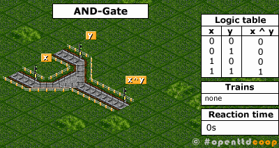

The insane LED Counter & Logic Gates [Part 1]
While browsing tt-forums I stumbled upon a LED Counter created in an OpenTTD game. This is an amazing work because you require a basic knowledge about electronics as well as about OpenTTD and signaling. This work inspired me and I planned to do some other constructions.
[LED Countr by Igloo]
Of course this counter is a complex electronic circuit and we should not look at it in a too close manner. It uses half-adders, memory and a lot of logic gates. But some parts, especially the logic gates, are really interesting.
My first intention was to optimize them to be useful in #openttdcoop network games.
Logic Gates – An Overview
Boolean Operators a.k.a. Signals
First of all, we’ll have a look at the requirements to understand logic gates, as I create them, in OpenTTD. A default signal can be either red or green. These two states can be defined as true and false or as 1 and 0 or zero and non-zero or easily as yes and no. In fact, it is a system with only two states. A Maybe doesn’t exist. As you can see it, doesn’t matter which state has which name, but it is important for the definition and further constructions.
My definition is:
- 0 / false / no = green
- 1 / true / yes = red
That’s just a matter of the question you ask yourself. My question is: Is a train in the signal block?. The complete logic turns around if you ask yourself: Is the track free?.
Please keep in mind that my definition is _NOT_ equivalent to the definition of ‘red’ and ‘green’ used in electronics. I still decided to do it this way, because the AND-gate is easier to build in this case and I somehow think it is used more often in complicated constructions like the XOR-gate.
[Types and Values of Signals]
Handling special cases
You also should know, e.g. when you build your own logic gate construction, that I always used two trains to create it. One train and a signal block with more than one exit signal (-< =) is always vulnerable for a signal-lock-situation. In this case the train enters the block and while choosing a track, the chosen track and its signal turn red. The train is locked and it takes several seconds to return and choose the correct exit.
I really like Marks Idea for a NOT Gate, but it might cause unintended problems. Using two trains avoids this problem because the first train stops and the train behind must always choose the other option which changes the state of the logic construction.

The best train
I optimized all construction for two Lev3 ‘Pegasus’ (Maglev) and added sometimes a wagon to make the train a half-tile longer. Lev3 is better than Lev4, because Lev4 for is accelerating too fast and both trains slow each other down all the time having a lower average speed than Lev3. All slower trains (482km/h for Lev3) work too, but the reaction time is slower.
The AND-Gate
I told you a lot about the requirements now and unluckily the first logic gate is very simple. The feature of AND logic is hardcoded in OpenTTD (all entrance-exit-blocks work that way) and we don’t have to add further additions to this signal block.

What happens here is easy, as the logic table shows you only if both signals (x, y) have the same (1) state the output (x^y) is (1). In other (easier) words x and y have to be red to turn x^y red as well.
The NOT-Gate
The NOT gate returns always the opposite of the input. Two trains, the loop and a prio-line were needed to create this construction. It looks a bit like a maze, because I shrank the size as much as possible. For this construction you need two Lev3 with one wagon or two double Lev3 to work properly. If you don’t the output might turn 0 for a millisecond.
[The NOT-Gate]
The OR-Gate
The OR-Gate was the trickiest to construct. I had many problems with incorrect output in the beginning, but I found a clever solution. Again you need a loop and a one-tile prio for the input x. If input x turns red, the first train will stop at the entry-signal of the inner loop right in front of input x. The second train will avoid the inner loop and use the outer loop. If the train is there, the output turns red regardless of the input y. The thing I am really proud of is, if input y turns red, the loop is ignored and the output turns red immediately.
[The OR-Gate]
More Logic Gates
With these three logic gates you can create many other logic gates or logical constructions such as XOR, half adders, full adders or even flipflops. Though I doubt it is possible to create a complete ALU (e.g. the slow reaction time), but constructions helping us to regulate the traffic and the movement of our trains in complex openttdcoop network should be possible.
[XOR-Gate by Osai]
![[XOR-Gate by Osai]](https://web.archive.org/web/2/http://www.openttdcoop.org/blog/files/pictures/logic_gates/xor_example.png){kind=link}
I hope you gain something from my little article about logic gates and enjoyed reading. Now head on, build your own logic gates or implement them in any other weird network construction. Please post your results as comments, at our wiki or send an email to info [at] openttdcoop [dot] org.
Categories: OpenTTD, Tutorial
planetmaker June 18, 2008 05:54
Fantastic article on an incredible topic!
dih June 18, 2008 06:03
oh my word… he’s going nuts
i dont even want to know how much time that took you
seriously, that is awsome! great work… not feed me details on where you would like to see that stuff being built in a ps game
…snap this is good!
Ganan June 18, 2008 11:41
Great job on those! They work extremely well.
Built a counter similar to the one in that example and a few other experiments. I’ll upload the savegame somewhere tomorrow if anyone wants it.
One other thing that might be helpful in a few situations is a way of having memory without using trains (sortof).
http://img374.imageshack.us/img374/5086/stuffeo1.png
Osai June 18, 2008 16:04
Interesting screenshot Ganan. Did you use RS-flipflops to save the state?
Ganan June 18, 2008 18:48
I dont believe I used RS-flipflops (new to this). I quickly built a functional (but slow) memory cell using one train (wont have problems due to the way it’s timed). The problem with using one train is that the switch will always show 0 for just a second when updating.
The cell has an input, output and a reset switch. If the reset switch is red, the memory is “read-only”. Otherwise it is writeable and the train will circle around to the new position.
http://img156.imageshack.us/img156/1936/memoryyh9.png
The reset switch needs to re-lock slightly before the math or it wont recieve the updated value. However this is a small annoyance that may not be fixable unless we develop all instant gates.
The other method I found was using an repeating loop of combo-signals.
http://img158.imageshack.us/img158/8500/infloopmemorybj7.png
And here’s the savegame http://rapidshare.com/files/123392059/Logic_gate_experiments.sav.html
grim4593 June 19, 2008 00:54
Wow. This is some cool stuff. I always wondered how easy/hard it would be to make electrical circuits with OpenTTD, but lacked the drive to try to figure it out. One time I asked if it were possible, and was responded to with a firm no.
Great Job!
Ganan June 19, 2008 23:38
Tiny update.
A well functioning fairly fast memory design:
http://img393.imageshack.us/img393/7721/nmemem6.png
Instant OR gate (Using PBS)
http://img179.imageshack.us/img179/2279/instantoryj9.png
hth June 25, 2008 21:04
This blows my mind. I never imagined something like this was possible in TT. I hope you guys run with this and create something more sophisticated. What do you think the possibilites are? Great work.
dih June 26, 2008 07:05
http://www.openttdcoop.org/wiki/User:Mark/other
Pixelz June 27, 2008 23:26
Ganan, which version of openttd did you use for that save? I can’t seem to open it in any of the ones I’ve tried.
Ganan June 30, 2008 00:59
http://rapidshare.com/files/125956883/trunk_r13501_yapp_r13495_v8_svn.patch_6.rar.html
The build I used + a updated savegame.
Pixelz June 30, 2008 02:41
I’ve created a not gate where the train loops instead of stops. I believe it to be faster then previous versions but I haven’t done any advanced benchmarking on it. It’s based on the not gate Igloo posted in the original thread.
http://www.pix.pp.se/ttd/looping_not_gate.png
Flamelord July 7, 2008 04:54
I’ve come up with another interesting method for storing data. Taking away the WRITE and READ inputs and then toggling RESET just before setting DATA could make this into some very fast memory indeed, if that’s what the job requires.
With the WRITE and READ inputs (which write-protect and prevent reading from the memory, respectively), this can be quite a permanent storage solution, so long as it has a reliably red RESET input.
http://www.tt-forums.net/viewtopic.php?p=707009#p707009
Optimization of Logic - Logic Gates [Part II] at #openttdcoop January 18, 2009 23:31
[...] half a year ago I blogged about Logic Gates and already the headline promised that this story is not over yet. Now, I was finally able to [...]